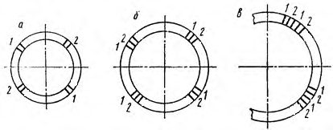
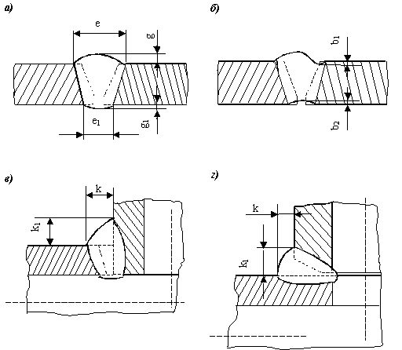
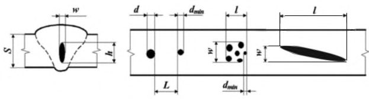
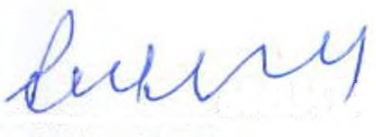

СП 406.1325800.2018 «Трубопроводы магистральные и промысловые стальные для нефти»
О документе: разработчики, утверждение, регистрация, ключевые слова
СВОД ПРАВИЛ
СП 406.1325800.2018
Издание официальное
- 1 ИСПОЛНИТЕЛЬ -Ассоциация «Национальное объединение строителей» (НОСТРОЙ)
- 2 ВНЕСЕН Техническим комитетом по стандартизации ТК 465 «Строительство»
- 3 ПОДГОТОВЛЕН к утверждению Департаментом градостроительной деятельности и архитектуры Министерства строительства и жилищнокоммунального хозяйства Российской Федерации (Минстрой России)
- 4 УТВЕРЖДЕН приказом Министерства строительства и жилищнокоммунального хозяйства Российской Федерации от 19 сентября 2018 г. № 596/пр и введен в действие с 20 марта 2019 г.
- 5 ЗАРЕГИСТРИРОВАН Федеральным агентством по техническому регулированию и метрологии (Росстандарт)
В случае пересмотра (замены) или отмены настоящего свода правил соответствующее уведомление будет опубликовано в установленном порядке. Соответствующая информация, уведомление и тексты размещаются также в информационной системе общего пользования - на официальном сайте разработчика (Минстрой России) в сети Интернет
© Минстрой России, 2018
Настоящий нормативный документ не может быть полностью или частично воспроизведен, тиражирован и распространен в качестве официального издания на территории Российской Федерации без разрешения Минстроя России
Дата введения - 2019-03-20
УДК ОКС 75.200
Ключевые слова: трубопровод, сборка, сварка, контроль сварки, дефект, ремонт
Руководитель разработки
М.З.Шейнкин, к.т.н
Введение
6 ВВЕДЕН ВПЕРВЫЕ
9.11 Охрана труда и промышленная безопасность …………………… Библиография ………………………………………………………………...
Настоящий свод правил разработан в соответствии с федеральными законами от 27 декабря 2002 г. № 184-ФЗ «О техническом регулировании», от 30 декабря 2009 г. № 384-ФЗ «Технический регламент о безопасности зданий и сооружений».
Настоящий свод правил разработан Ассоциацией «Национальное объединение строителей» (НОСТРОЙ) при участии канд. техн. наук М.З. Шейнкина , Е.В. Лопатина , М.Н. Кагановича , Е.А. Фоминой .
1Область применения
2Нормативные ссылки
В настоящем своде правил использованы нормативные ссылки на следующие документы:
ГОСТ 12.2.003-91 Система стандартов безопасности труда. Оборудование производственное. Общие требования безопасности
ГОСТ 6996-66 (ИСО 4136-89, ИСО 5173-81, ИСО 5177-81) Сварные соединения. Методы определения механических свойств.
ГОСТ 7512-82 Контроль неразрушающий. Соединения сварные. Радиографический метод
ГОСТ 8050-85 Двуокись углерода газообразная и жидкая. Технические условия
ГОСТ 8695-75 Трубы. Метод испытания на сплющивание
ГОСТ 10157-2016 Аргон газообразный и жидкий. Технические условия
ГОСТ 16504-81 Система государственных испытаний продукции.
Испытания и контроль качества продукции. Основные термины и определения
Монтажные работы. Сварка и контроль ее выполнения
Main pipelines and field pipelines from steel for oil and gas. Assembling. Welding and testing
ГОСТ 18442-80 Контроль неразрушающий. Капиллярные методы. Общие требования
ГОСТ 20426-82 Контроль неразрушающий. Методы дефектоскопии радиационные. Область применения
ГОСТ 24297-2013 Верификация закупленной продукции. Организация проведения и методы контроля
ГОСТ ISO 17636-2-2017 Неразрушающий контроль сварных соединений. Радиографический контроль. Часть 2. Способы рентгенои гаммаграфического контроля с применением цифровых детекторов
ГОСТ Р 12.1.019-2009 Система стандартов безопасности труда. Электробезопасность. Общие требования и номенклатура видов защиты
ГОСТ Р 55990-2014 Месторождения нефтяные и газонефтяные. Промысловые трубопроводы. Нормы проектирования
ГОСТ Р 56512-2015 Контроль неразрушающий. Магнитопорошковый метод. Типовые технологические процессы
ГОСТ Р ИСО 857-1-2009 Сварка и родственные процессы. Словарь. Часть 1. Процессы сварки металлов. Термины и определения
ГОСТ Р ИСО 17659-2009 Сварка. Термины многоязычные для сварных соединений
СП 36.13330.2012 «СНиП 2.05.06-85* Магистральные трубопроводы» (с изменением № 1)
СП 86.13330.2014 «СНиП III-42-80* Магистральные трубопроводы» (с изменениями № 1, № 2)
СП 284.1325800.2016 Трубопроводы промысловые для нефти и газа. Правила проектирования и производства работ
СанПиН 2.6.1.1281-03 Санитарные правила по радиационной безопасности персонала и населения при транспортировании радиоактивных материалов (веществ)
СанПиН 2.6.1.2523-09 Нормы радиационной безопасности (НРБ-99/2009)
СанПиН 2.6.1.3164-14 Гигиенические требования по обеспечению радиационной безопасности при рентгеновской дефектоскопии
СП 2.6.1.2612-10 Основные санитарные правила обеспечения радиационной безопасности (ОСПОРБ-99/2010)
СП 2.6.1.3241-14 Гигиенические требования по обеспечению радиационной безопасности при радионуклидной дефектоскопии
Примечание - При пользовании настоящим сводом правил целесообразно проверить действие ссылочных документов в информационной системе общего пользования -на официальном сайте федерального органа исполнительной власти в сфере стандартизации в сети Интернет или по ежегодному информационному указателю «Национальные стандарты», который опубликован по состоянию на 1 января текущего года, и по выпускам ежемесячного информационного указателя «Национальные стандарты» за текущий год. Если заменен ссылочный документ, на который дана недатированная ссылка, то рекомендуется использовать действующую версию этого документа с учетом всех внесенных в данную версию изменений. Если заменен ссылочный документ, на который дана датированная ссылка, то рекомендуется использовать версию этого документа с указанным выше годом утверждения (принятия). Если после утверждения настоящего свода правил в ссылочный документ, на который дана датированная ссылка, внесено изменение, затрагивающее положение, на которое дана ссылка, то это положение рекомендуется применять без учета данного изменения. Если ссылочный документ отменен без замены, то положение, в котором дана ссылка на него, рекомендуется применять в части, не затрагивающей эту ссылку. Сведения о действии сводов правил целесообразно проверить в Федеральном информационном фонде стандартов.
3Термины и определения
В настоящем своде правил применены термины по ГОСТ 16504, ГОСТ ISO 17636-2, ГОСТ Р ИСО 857-1, ГОСТ Р ИСО 17659, ГОСТ Р 55990, СП 36.13330, СП 86.13330, а также следующие термины с соответствующими определениями:
- 3.1высота дефекта
- Линейный размер проекции дефекта по высоте шва на плоскость, перпендикулярную оси трубопровода, или на плоскость, проходящую через дефект и ось трубопровода.
- 3.2глубина залегания дефекта
- Минимальное расстояние от границы дефекта до поверхности сварного соединения (трубы), с которой осуществляется контроль.
- 3.3длина дефекта
- Линейный размер проекции дефекта вдоль шва на плоскость, перпендикулярную оси трубопровода.
- 3.4катушка
- Отрезок трубы, с подготовленными торцами, предназначенный для соединения двух участков трубопровода либо для приварки к торцам трубопроводной арматуры, соединительным деталям трубопровода, либо для сварки контрольных сварных соединений при производственной аттестации технологий сварки, допускных испытаний и аттестации сварщиков, операторов.
- 3.5комплекс цифровой радиографии
- Устройства, обеспечивающие перенос радиационного изображения, возникающего под действием ионизирующего излучения, в память компьютера с последующими его визуализацией, обработкой и хранением.
- 3.6механизированный ультразвуковой контроль; МУЗК
- Ультразвуковой контроль при котором часть операций выполняется вручную, а часть операций механизирована.
- 3.7операционная технологическая карта
- Документ, утвержденный организацией, выполняющей сборку, сварку и контроль качества сварных соединений, в котором изложены содержание и правила выполнения конкретных работ, описаны все технологические операции, их параметры и данные о средствах технического оснащения.
- 3.8прямая врезка
- Специальное сварное соединение основной трубы и трубы-ответвления/патрубка, конструкция и условия выполнения которого установлены нормативными документами и технической документацией.
- 3.9ремонт сварного стыка
- Процесс устранения недопустимых дефектов сварного соединения, обнаруженных неразрушающими методами контроля, путем механической обработки, удаления/шлифовки с последующей заваркой. Примечание - Механическая обработка (шлифовка, зачистка) и (или) заварка сварного соединения, проводимая до приемки руководителем работ для последующего неразрушающего контроля, в понятие «ремонт сварного шва» не входит.
- 3.10ручной ультразвуковой контроль; РУЗК
- Совокупность операций контроля, выполняемых в соответствии с требованиями нормативных документов (методикой контроля) с использованием универсального ультразвукового прибора (дефектоскопа), при непосредственном участии человека в процессе сканирования объекта контроля, сбора, обработки, регистрации, интерпретации результатов контроля и принятии решения о качестве контролируемого объекта.
- 3.11скопление дефектов
- Совокупность внутренних дефектов, состоящих из трех или более дефектов, не лежащих на одной прямой, при условии, что расстояние между соседними дефектами не превышает 3кратного размера наибольшего из дефектов.
- 3.12термическая обработка (термообработка)
- Нагрев, выдержка и охлаждение сварных соединений по определенным режимам в целях получения заданных свойств.
- 3.13чувствительность контроля
- Минимальные размеры дефектов, выявляемых данным видом (методом) контроля при определенных условиях проведения контроля.
4Сокращения
В настоящем своде правил применены следующие сокращения:
АВИК - автоматизированный визуальный и измерительный контроль;
АУЗК - автоматизированный ультразвуковой контроль;
ВИК - визуальный и измерительный контроль;
Е.О.П. - единица оптической плотности;
КР - компьютерная радиография;
КСС - контрольное сварное соединение;
ЛС - линия сплавления;
МК - магнитопорошковый контроль;
НД - нормативный документ;
НК - неразрушающий контроль;
НО - настроечный образец;
ПВК - контроль проникающими веществами;
РК - радиографический контроль;
СДТ - соединительная деталь трубопровода;
ТПА - трубопроводная и регулирующая арматура;
ТУ - технические условия;
УЗК - ультразвуковой контроль;
ЦР - цифровая радиография;
DN - номинальный диаметр.
5Требования к сварщикам, сварочным материалам и сварочному оборудованию
5.1Требования к персоналу сварочного производства
- он (они) впервые приступил(и) к сварке трубопровода или имел(и) перерыв в своей работе более 3 мес;
- он (они) ранее не выполнял(и) сварку труб данным типом сварочных материалов, применяемых на данном объекте;
- он (они) не работал(и) по технологии, применяемой на данном объекте;
- он (они) не работал(и) на типе сварочного оборудования, применяемого на данном объекте;
- изменился диаметр труб под сварку, требующий изменения количества вырезаемых образцов, согласно рисунку 5.1, а, б, в;
- изменена форма разделки кромок труб под сварку.
Персонал сварочного производства, участвовавший в аттестации технологии сварки и выполнивший КСС, признанное годным, от аттестации на допускных стыках освобождается.
1 - образец на изгиб корнем шва наружу (ГОСТ 6996-66, тип XXVII или XXVIII) или на ребро; 2 - образец на изгиб корнем шва внутрь (ГОСТ 6996-66, тип XXVII или XXVIII) или на ребро

Рисунок 5.1 - Схема вырезки образцов для механических испытаний из труб диаметром до 400 мм включительно ( а ), от 400 до 1000 мм ( б ) и 1000 мм и более ( в )
Образцы для проведения механических испытаний должны быть подготовлены в соответствии с требованиями ГОСТ 6996 и настоящего раздела.
Таблица 5.1 - Количество образцов для механических испытаний
| Количество образцов для механических испытаний | Количество образцов для механических испытаний | Количество образцов для механических испытаний | Количество образцов для механических испытаний | |
|---|---|---|---|---|
| Диаметр трубы, мм | с расположением корня шва | с расположением корня шва | с расположением корня шва | |
| наружу | внутрь | на ребро | всего | |
| Толщина стенки, трубы до 12,5 мм включительно | Толщина стенки, трубы до 12,5 мм включительно | Толщина стенки, трубы до 12,5 мм включительно | Толщина стенки, трубы до 12,5 мм включительно | Толщина стенки, трубы до 12,5 мм включительно |
| До 400 мм | 2 | 2 | - | 4 |
| Свыше 400 мм | 4 | 4 | - | 8 |
| Толщина стенки трубы свыше 12,5 мм | Толщина стенки трубы свыше 12,5 мм | Толщина стенки трубы свыше 12,5 мм | Толщина стенки трубы свыше 12,5 мм | Толщина стенки трубы свыше 12,5 мм |
| До 400 мм | - | - | 4 | 4 |
| Свыше 400 мм | - | - | 8 | 8 |
- ВИК при подготовке и сборке труб для автоматической контактной стыковой сварки оплавлением;
- контролю автоматической регистрации параметров сварки по результатам выполнения каждого сварного соединения;
- контролю автоматической регистрации параметров термообработки по результатам выполнения каждого сварного соединения и подтверждению их соответствия заданным значениям;
- ВИК внешнего вида сварного соединения снаружи трубы;
- механическим испытаниям;
- АУЗК.
Допускные стыки, выполненные контактной стыковой сваркой оплавлением и прошедшие ВИК, подвергают механическим испытаниям. Образцы, вырезанные из допускного стыка, испытывают на изгиб. Схема вырезки и необходимое количество образцов для механических испытаний должны соответствовать приведенным на рисунке 5.1 и в таблице 5.1.
Образцы для проведения механических испытаний должны быть подготовлены в соответствии с требованиями ГОСТ 6996.
Сварщики-операторы признаются прошедшими допускные испытания, если по результатам ВИК параметров сварки КСС и результатам механических испытаний получены положительные заключения, что должно быть отражено в протоколе допускных испытаний.
Если результаты ВИК, механических испытаний или параметры сварки являются неудовлетворительными (брак), после выяснения и устранения причин брака разрешается выполнить сварку и контроль другого допускного сварного соединения. В случае получения при повторном контроле неудовлетворительных результатов сварщик-оператор признается не выдержавшим испытание. К повторному испытанию оператор может быть допущен только после внеочередной аттестации.
5.2Требования к сварочным материалам
- электроды с основным и целлюлозным видами покрытия для ручной дуговой сварки;
- проволоки сплошного сечения для механизированной, автоматической сварки в среде защитных газов и автоматической сварки под флюсом;
- присадочные прутки для аргонодуговой сварки неплавящимся электродом;
- порошковые проволоки для механизированной и автоматической сварки в среде защитных газов;
- самозащитные порошковые проволоки для механизированной и автоматической сварки;
- плавленые и керамические (агломерированные) флюсы для автоматической сварки проволокой сплошного сечения;
- защитные газы (газообразный аргон, газообразная двуокись углерода и их смеси) для ручной дуговой и механизированной сварки неплавящимся электродом, механизированной и автоматической сварки проволокой сплошного сечения и порошковой проволокой.
- наличие документа, подтверждающее качество, на конкретную партию, а также соответствие маркировки и условного обозначения в документе, подтверждающем качество (для сварочных материалов импортного производства - дубликат документа, подтверждающего качество, на русском языке, заверенный поставщиком);
- сохранность упаковки;
- диаметр электродов и проволок и соответствие данным документа, подтверждающего качество;
- состояние поверхности покрытия электродов и проволоки;
- степень разнотолщинности покрытия электродов.
Флюсы перед сваркой должны подвергаться сушке или прокалке в соответствии с требованиями ТУ. Не допускается смешивать флюсы разных марок и способов изготовления.
5.3Требования к сварочному оборудованию
- технического описания или руководства по эксплуатации с рекомендациями по режимам сварки и паспорта на оборудование;
- ТУ или спецификаций на изготовление сварочного оборудования;
- действующих свидетельств об аттестации сварочного оборудования.
- автоматическое управление процессом сварки по заданным параметрам;
- автоматическую регистрацию параметров процесса сварки;
- автоматический анализ возможных отклонений параметров и подтверждение соответствия (результат выносится на пульт управления) процесса заданному режиму сварки;
- формирование электронного паспорта на сварное соединение;
- удаление внутреннего грата и очистку полости труб;
- регистрацию качества удаления внутреннего грата;
- удаление наружного грата;
- проведение термообработки сварного соединения (при необходимости);
- автоматическое управление и регистрацию параметров термообработки.
6Подготовка к сварке труб и сборка стыков
6.1Подготовка к сварке труб и деталей трубопроводов
- не менее 150 мм от торца для труб с номинальной толщиной стенки до 32,0 мм включительно;
- не менее 200 мм от торца для труб с номинальной толщиной стенки свыше 32,0 мм.
В месте удаления усиления швов должен быть обеспечен плавный переход к исходной поверхности трубы. Толщина стенки труб в месте удаления усиления швов не должна выходить за пределы допустимых значений, если иное не предусмотрено требованиями ТУ или технологической инструкцией.
6.2Сборка стыков под сварку
- всего периметра первого (корневого) слоя шва ручной дуговой сваркой электродами с основным видом покрытия, механизированной сваркой проволокой сплошного сечения в углекислом газе, автоматической двухсторонней сваркой под флюсом;
- корневого слоя шва и горячего прохода ручной дуговой сваркой электродами с целлюлозным видом покрытия;
- корневого слоя шва и горячего прохода (1-го заполняющего слоя) при автоматической сварке проволокой сплошного сечения в защитных газах.
При выполнении сварки стыков на наружном центраторе центратор может быть удален после сварки не менее 60 % периметра стыка. При этом участки корневого слоя шва должны равномерно располагаться по периметру стыка.
Таблица 6.1 Требования к количеству и протяженности прихваток
| Диаметр стыкуемых элементов, мм | Минимальное количество прихваток | Длина прихваток, мм |
|---|---|---|
| Свыше 1020 и более | 4 | 150-200 |
| Свыше 820 до 1020 включительно | 4 | 100-150 |
| Свыше 426 до 720 включительно | 3 | 60-100 |
| Свыше 219 до 426 включительно | 3 | 40-60 |
| Свыше 159 до 219 включительно | 2 | 30-50 |
| Свыше 14 до 159 включительно | 2 | 10-15 |
6.3Предварительный и сопутствующий подогрев
- показателям таблицы 6.2 - для ручной дуговой сварки электродами с основным видом покрытия и механизированной сварки проволокой сплошного сечения в углекислом газе;
- показателям таблицы 6.3 - для ручной дуговой сварки электродами с целлюлозным видом покрытия;
- от 50 о C до 80 о C независимо от температуры окружающего воздуха для автоматической сварки проволокой сплошного сечения в защитных газах неповоротных кольцевых стыковых соединений труб;
- от 50 о C до 80 о C при температуре окружающего воздуха ниже 0 о C и (или) при наличии влаги на свариваемых кромках - для автоматической двухсторонней сварки под флюсом поворотных кольцевых стыковых соединений труб на трубосварочных базах;
- от 100 о C до 130 о C независимо от температуры окружающего воздуха при ремонте сварных соединений с толщинами стенок до 27,0 мм включительно;
- от 150 о C до 180 о C независимо от температуры окружающего воздуха при ремонте сварных соединений с толщинами стенок свыше 27,0 мм;
- показателям таблицы 6.4 - при сварке труб с ТПА; при наличии в паспорте на запорную арматуру требований предприятия-изготовителя по максимально допустимой температуре нагрева корпуса в рабочей зоне для соединений «переходное кольцо - корпус арматуры» следует предпринять меры по ограничению температуры корпуса в рабочей зоне.
Таблица 6.2 Температура предварительного подогрева свариваемых кромок труб при ручной дуговой сварке электродами с основным видом покрытия и механизированной сварке проволокой сплошного сечения в углекислом газе первого (корневого) слоя шва, прихваток соединений труб, труб с СДТ
| Эквивалент углерода основного металла | Температура предварительного подогрева, С, при толщине свариваемых элементов | Температура предварительного подогрева, С, при толщине свариваемых элементов | Температура предварительного подогрева, С, при толщине свариваемых элементов | Температура предварительного подогрева, С, при толщине свариваемых элементов | Температура предварительного подогрева, С, при толщине свариваемых элементов | Температура предварительного подогрева, С, при толщине свариваемых элементов | Температура предварительного подогрева, С, при толщине свариваемых элементов | Температура предварительного подогрева, С, при толщине свариваемых элементов | Температура предварительного подогрева, С, при толщине свариваемых элементов |
|---|---|---|---|---|---|---|---|---|---|
| (С э ),% | до 8,0 включ. | св. 8,0 до 10,0 включ. | св. 10,0 до 12,0 включ. | св. 12,0 до 14,0 включ. | св. 14,0 до 16,0 включ. | св. 16,0 до 18,0 включ. | св. 18,0 до 20,0 включ. | св. 20,0 до 27,0 включ. | св. 27,0 |
| До 0,43 включ. | - 35 о С | - 15 о С | 0 о С | ||||||
| Св. 0,43 до 0,46 включ. | - 15 о С | + 5 о С |
Примечание - В настоящей таблице использованы следующие условные графические обозначения фона ячеек:
- подогрев от 50 о C до 80 о C при температуре окружающего воздуха ниже 5 о C и (или) наличии влаги на концах труб;
35 о C
- подогрев от 100 о C до 130 о C при температуре окружающего воздуха ниже указанной и от 50 о C до 80 о C при температуре окружающего воздуха ниже 5 о C и (или) наличии влаги на концах труб;
- подогрев от 100 о C до 130 о C независимо от температуры окружающего воздуха;
- подогрев от 150 о C до 180 о C независимо от температуры окружающего воздуха.
Таблица 6.3 Температура предварительного подогрева свариваемых кромок труб при сварке корневого слоя шва соединений труб электродами с целлюлозным видом покрытия
| Эквивалент углерода основного металла | Температура предварительного подогрева, С, при толщине стенки свариваемых элементов | Температура предварительного подогрева, С, при толщине стенки свариваемых элементов | Температура предварительного подогрева, С, при толщине стенки свариваемых элементов | Температура предварительного подогрева, С, при толщине стенки свариваемых элементов | Температура предварительного подогрева, С, при толщине стенки свариваемых элементов | Температура предварительного подогрева, С, при толщине стенки свариваемых элементов | Температура предварительного подогрева, С, при толщине стенки свариваемых элементов | Температура предварительного подогрева, С, при толщине стенки свариваемых элементов | Температура предварительного подогрева, С, при толщине стенки свариваемых элементов |
|---|---|---|---|---|---|---|---|---|---|
| (С э ),% | до 8,0 включ. | св. 8,0 до 10,0 включ. | св. 10,0 до 12,0 включ. | св. 12,0 до 14,0 включ. | св. 14,0 до 16,0 включ. | св. 16,0 до 18,0 включ. | св. 18,0 до 20,0 включ. | св. 20,0 до 27,0 включ. | св. 27,0 |
| До 0,43 включ. | - 10 о C | 0 о C | |||||||
| Св. 0,43 до 0,46 включ. | 0 о С |
Примечание - В настоящей таблице использованы следующие условные графические обозначения фона ячеек:
- подогрев от 50 о C до 80 о C при температуре окружающего воздуха ниже 5 о С и (или) наличии влаги на концах труб;
- 35 о C


- подогрев от 100 о C до 130 о C при температуре окружающего воздуха ниже указанной и от 50 о C до 80 о C при температуре окружающего воздуха ниже 5 о C и (или) наличии влаги на концах труб;
- подогрев от 100 о C до 130 о C независимо от температуры окружающего воздуха;
- подогрев от 150 о C до 180 о C независимо от температуры окружающего воздуха;
- подогрев от 200 о C до 230 о C независимо от температуры окружающего воздуха.
Таблица 6.4 Температура предварительного подогрева свариваемых кромок при сварке прихваток, первого (корневого) слоя шва соединений ТПА
| Эквивалент углерода основного металла | Температура предварительного подогрева, С, при толщине стенки свариваемых элементов | Температура предварительного подогрева, С, при толщине стенки свариваемых элементов | Температура предварительного подогрева, С, при толщине стенки свариваемых элементов | Температура предварительного подогрева, С, при толщине стенки свариваемых элементов | Температура предварительного подогрева, С, при толщине стенки свариваемых элементов | Температура предварительного подогрева, С, при толщине стенки свариваемых элементов | Температура предварительного подогрева, С, при толщине стенки свариваемых элементов | Температура предварительного подогрева, С, при толщине стенки свариваемых элементов | Температура предварительного подогрева, С, при толщине стенки свариваемых элементов |
|---|---|---|---|---|---|---|---|---|---|
| (C э ),% | до 8,0 включ. | св. 8,0 до 10,0 включ. | св. 10,0 до 12,0 включ. | св. 12,0 до 14,0 включ. | св. 14,0 до 16,0 включ. | св. 16,0 до 18,0 включ. | св. 18,0 до 20,0 включ. | св. 20,0 до 27,0 включ. | св. 27,0 |
| До 0,43 включ. | - 25 С | - 10 С | |||||||
| Св. 0,43 до 0,46 включ. | 0 С |
Примечание - В настоящей таблице использованы следующие условные графические обозначения фона ячеек:
- подогрев от 50 C до 80 C при температуре окружающего воздуха ниже 5 С и (или) наличии влаги на концах труб;
- 25 С

- подогрев от 100 C до 120 C при температуре окружающего воздуха ниже указанной и от 50 C до 80 C при температуре окружающего воздуха ниже 5 С и (или) наличии влаги на концах труб;
- подогрев от 100 C до 120 C независимо от температуры окружающего воздуха.
7Способы сварки
Разработанная технология, прошедшая соответствующие процедуры, должна быть согласована с застройщиком (техническим заказчиком).
7.1Ручная дуговая сварка плавящимися покрытыми электродами
7.1.1 Ручная дуговая сварка электродами с основным видом покрытия
7.1.1.1 Ручную дуговую сварку электродами с основным видом покрытия следует применять для сварки всех слоев шва кольцевых стыковых соединений труб, а также специальных сварных соединений трубопроводов (захлестов, прямых вставок (катушек), разнотолщинных соединений труб, СДТ, ТПА, угловых соединений - прямых врезок, при ремонте кольцевых стыковых и угловых сварных соединений труб, СДТ, ТПА).
Ручную дуговую сварку электродами с основным видом покрытия разрешается применять в составе комбинированных технологий сварки.
7.1.1.2 Ручной дуговой сваркой электродами с основным видом покрытия следует выполнять:
- корневой и подварочный (если он регламентирован) слои шва - на подъем на постоянном токе прямой или обратной полярности;
- заполняющий и облицовочные слои шва - на подъем или на спуск на постоянном токе обратной полярности.
7.1.1.3 Подварочный слой (если он регламентирован) должен осуществляться электродами с основным видом покрытия на постоянном токе обратной полярности на подъем. Подварочный слой следует выполнять до начала сварки заполняющих слоев шва.
7.1.1.4 Ручную дуговую сварку электродами с основным видом покрытия на спуск необходимо выполнять с учетом следующих особенностей:
- сварка ведется короткой дугой;
- не допускается повторное зажигание одного и того же электрода;
- сварку второго и последующих заполняющих слоев шва выполняют за два-три прохода (валика), при этом в процессе сварки каждый валик должен быть зачищен механическим способом;
- последний заполняющий слой следует выводить заподлицо с разделкой кромок с оплавлением ее краев;
- облицовочный слой следует выполнять с поперечными колебаниями, при этом минимальная амплитуда колебаний должна составлять два диаметра электрода.
7.1.1.5 Режимы ручной дуговой сварки электродами с основным видом покрытия должны соответствовать параметрам, указанным в операционных технологических картах сборки и сварки по аттестованной согласно [4] технологии сварки.
7.1.2 Ручная дуговая сварка электродами с целлюлозным видом покрытия
7.1.2.1 Ручную дуговую сварку электродами с целлюлозным видом покрытия на спуск следует применять для сварки корневого слоя, горячего прохода, заполняющих и облицовочного слоев шва сварных соединений.
7.1.2.2 Ручную дуговую сварку электродами с целлюлозным видом покрытия разрешается также применять в составе комбинированных технологий сварки.
7.1.2.3 Ручную дуговую сварку электродами с целлюлозным видом покрытия следует применять при температуре окружающего воздуха не ниже минус 40 о С при условии полного соблюдения требований к температуре предварительного подогрева и межслойной температуре.
7.1.2.4 Ручная дуговая сварка электродами с целлюлозным видом покрытия корневого слоя шва должна выполняться на постоянном токе прямой или обратной полярности, горячего прохода - на постоянном токе обратной полярности.
7.1.2.5 Ширина валика при ручной дуговой сварке должна быть не более трех диаметров электрода.
7.1.2.6 Места обрыва или прерывания дуги, замки при сварке корневого слоя шва электродами с целлюлозным видом покрытия должны быть обработаны шлифмашинкой.
7.1.2.7 При вынужденных перерывах во время сварки корневого слоя шва следует поддерживать температуру торцов труб на уровне требуемой температуры предварительного подогрева.
7.1.2.8 После сварки корневого слоя шва его следует обработать шлифмашинкой для вскрытия шлаковых «карманов» и удаления чрезмерной выпуклости шва.
7.1.2.9 После зачистки корневого слоя шва следует незамедлительно выполнить сварку электродами с целлюлозным видом покрытия горячего прохода. Допускается выполнять горячий проход другими способами сварки при условии получения положительных результатов производственной аттестации технологий сварки согласно требованиям [4]. Интервал времени между окончанием сварки корневого слоя шва и началом выполнения горячего прохода должен быть не более 5 мин.
7.1.2.10 В процессе сварки горячего прохода температура корневого слоя шва должна быть в интервале от 70 о С до 250 о С. Если температура опустилась ниже 70 о С, следует провести сопутствующий подогрев до температуры от 70 о С до 100 о С.
7.1.2.11 После окончания сварки горячего прохода его следует обработать шлифмашинкой с набором дисковых проволочных щеток.
7.1.2.12 Режимы ручной дуговой сварки электродами с целлюлозным видом покрытия должны соответствовать параметрам, указанным в операционной технологической карте сборки и сварки по аттестованной согласно [4] технологии сварки.
7.1.2.13 При наличии в проектной документации специальных требований к сварным соединениям магистрального трубопровода их выполнение должно быть подтверждено результатами производственной аттестации технологии сварки.
7.2Автоматическая сварка под слоем флюса
7.2.1 Автоматическая двухсторонняя сварка под флюсом
7.2.1.1 Автоматическую двухстороннюю сварку проволокой сплошного сечения под флюсом на трубосварочных базах следует применять для сварки поворотных кольцевых стыковых соединений трубных секций.
7.2.1.2 Сварка должна осуществляться с использованием комбинаций «керамический флюс + проволока» либо «плавленый флюс + проволока».
Последовательность выполнения слоев шва:
- первый наружный слой шва;
- последующие наружные слои шва;
- внутренний слой шва.
7.2.1.3 Сварку второго наружного и внутреннего слоев шва допускается выполнять одновременно.
7.2.1.4 После сборки сварное соединение следует повернуть таким образом, чтобы прихватка находилась в нижней части стыкового соединения (в положении 6 ч), после чего в верхней части стыкового соединения (в положении 12 ч) начинают сварку первого наружного слоя шва.
7.2.1.5 Для исключения образования шлаковых включений и непроваров следует выполнять шлифмашинкой пропилы начального и конечного участков прихватки, а также начального участка первого наружного слоя. Глубина пропила - от 3,0 до 4,0 мм, ширина - от 3,0 до 4,0 мм, длина - от 25 до 40 мм. Допускается шлифовка выпуклости на прихватке от 0,5 до 1,0 мм.
7.2.1.6 Режимы двухсторонней автоматической сварки выбирают согласно технологическим инструкциям производителей применяемого оборудования.
7.2.1.7 Жимки внутреннего центратора следует освобождать только после полного завершения сварки первого наружного слоя шва.
7.2.1.8 Сварку всех слоев шва следует проводить без перерывов в работе. Интервал времени между завершением первого наружного и началом сварки внутреннего слоя шва не должен превышать 30 мин при температуре окружающего воздуха выше 0 С и 10 мин при температуре окружающего воздуха 0 о С и ниже.
7.2.1.9 Геометрические параметры сварных соединений труб, выполненных двухсторонней автоматической сваркой под флюсом, определяемые по макрошлифам, должны соответствовать рисунку 7.1.
7.2.1.10 Геометрические размеры сварных швов следует определять на трех макрошлифах, изготовленных из каждого 200 сварного соединения. Темплеты для макрошлифов допускается вырезать на любом участке сварного соединения равномерно по периметру сварного соединения, но не ближе 200 мм от места начала или окончания процесса сварки.
7.2.1.11 В случае отклонения геометрических параметров от заданных значений сварку следует прекратить, откорректировать настройку оборудования и параметры режимов сварки, после чего выполнить сварку двух новых соединений трубных секций, из которых следует вырезать макрошлифы. В случае если размеры сварных швов по макрошлифам соответствуют установленным требованиям, сварку разрешается продолжить.
7.2.1.12 Остальные 199 сварных соединений, предшествующие первому вырезанному, следует считать годными, если в результате НК в них не выявлено недопустимых дефектов.
7.2.1.13 Сварное соединение следует считать годным, если облицовочный слой шва перекрывает всю ширину разделки кромок, при условии отсутствия недопустимых дефектов сварного шва и соблюдении заданных режимов. Оси первого наружного слоя и внутреннего слоя шва должны совпадать или быть смещены относительно друг друга на расстояние не более 2,0 мм.
1 - ось первого (наружного) слоя шва; 2 - ось внутреннего слоя шва; 3 - условная ось сварного соединения; а - перекрытие наружного и внутреннего слоев шва ( а 3 мм); В в - ширина внутреннего слоя шва; с -смещение осей первого наружного и внутреннего слоев шва от условной оси сварного соединения ( с = 1 мм); h н и h в - глубина проплавления первого наружного и внутреннего слоев шва соответственно
Рисунок 7.1 -Геометрические размеры сварных соединений труб, выполненных двухсторонней автоматической сваркой под флюсом
- 7.2.1.14 Допускается оставлять до следующей смены сварное соединение трубной секции с невыполненным облицовочным слоем шва. Перед возобновлением сварки следует выполнить предварительный подогрев от 50 о С до 80 о С. При невыполнении указанных требований сварное соединение должно быть вырезано.
- 7.2.1.15 Не допускаются сброс сваренных секций, их соударение, скатывание на мокрый грунт или снег.
7.2.2 Автоматическая односторонняя сварка под флюсом
- 7.2.2.1 Автоматическую одностороннюю сварку проволокой сплошного сечения под флюсом на трубосварочных базах следует применять для сварки заполняющих и облицовочного слоев шва поворотных кольцевых стыковых соединений трубных секций.
- 7.2.2.2 Сварка корневого слоя шва может быть выполнена следующими способами:
- ручной дуговой сваркой электродами с основным видом покрытия;
- ручной дуговой сваркой электродами с целлюлозным видом покрытия. В данном случае должен быть выполнен также горячий проход шва. Сварку корневого слоя и горячего прохода шва следует проводить на одном стенде без продольного перемещения трубной секции;
- механизированной сваркой.
- 7.2.2.3 Сварку следует осуществлять с использованием комбинаций «керамический флюс + проволока» либо «плавленый флюс + проволока».
- 7.2.2.4 При ручной сварке корневого слоя электродами с основным видом покрытия и механизированной сварке допускается периодический поворот свариваемой секции без освобождения жимков центратора в удобное для сварщиков положение. Перекатывание секции на промежуточный стеллаж разрешается только после завершения сварки корневого слоя по всему периметру стыкового соединения.
7.2.2.5 В случае сварки корневого слоя шва электродами с основным видом покрытия для исключения прожогов при автоматической сварке по всему периметру стыкового соединения следует выполнять подварку корня шва изнутри трубы электродами с основным видом покрытия либо следует выполнять первый заполняющий слой механизированной сваркой самозащитной порошковой проволокой или электродами с основным видом покрытия.
7.2.2.6 Режимы односторонней автоматической сварки выбирают согласно ТУ производителей применяемого оборудования.
7.2.2.7 Не допускается оставлять незаконченными сварные соединения, выполненные за одну рабочую смену. В порядке исключения в случае выхода из строя оборудования, отключения сети и др. допускается оставлять до следующей смены сварное соединение трубной секции с невыполненным облицовочным слоем шва. Перед возобновлением сварки должен быть выполнен предварительный подогрев от 50 о С до 80 о С.
7.2.2.8 Не допускаются сброс сваренных секций, их соударение при скатывании на грунт или снег.
7.3Механизированная и автоматическая сварка в защитных газах проволокой сплошного сечения и порошковой проволокой
7.3.1 Механизированная сварка
7.3.1.1 Механизированную сварку проволокой сплошного сечения в среде защитных газов следует применять для сварки корневого слоя шва неповоротных кольцевых стыковых соединений труб с толщинами стенок от 6,0 мм.
7.3.1.2 Механизированную сварку порошковой проволокой в среде защитных газов следует применять для сварки заполняющих и облицовочного слоев шва.
7.3.1.3 Механизированную аргонодуговую сварку неплавящимся электродом следует применять для сварки технологических трубопроводов и ремонта сварных соединений.
7.3.1.4 Для механизированной сварки в углекислом газе следует применять сварочные агрегаты, сварочные установки, укомплектованные источниками сварочного тока, механизмами подачи сварочной проволоки, сварочными горелками, газовыми рампами с баллонами сжатого углекислого газа и вспомогательным оборудованием.
7.3.1.5 Источники сварочного тока должны обеспечивать импульснодуговой режим механизированной сварки и отвечать требованиям к установке следующих параметров:
- скорость подачи сварочной проволоки;
- режим работы сварочной горелки;
- длительность предварительной и послесварочной подачи углекислого газа.
7.3.1.6 Кромки труб для механизированной сварки корневого слоя шва должны иметь заводскую разделку либо должны быть подготовлены механическим способом станками подготовки кромок.
7.3.1.7 Количество операторов механизированной сварки, одновременно выполняющих сварку корневого слоя шва, должно быть не менее двух для сварных соединений труб диаметром 426 мм и более.
7.3.1.8 Корневой слой шва при сборке на внутреннем центраторе следует выполнять без прихваток. В случае технической обоснованности применения прихваток они должны быть удалены механическим способом шлифмашинками при выполнении корневого слоя шва.
7.3.1.9 Начальный и конечный участки корневого слоя шва, выполненного первым оператором, следует обработать механическим способом (абразивным кругом) для обеспечения плавного перехода при сварке корневого слоя шва вторым оператором.
7.3.1.10 Техника и режимы механизированной сварки указываются в операционных технологических картах сборки и сварки, разрабатываемых по аттестованной согласно [4] технологии сварки.
7.3.1.11 После выполнения корневого слоя шва следует зачистить шов механическим способом шлифмашинками. В случае прекращения сварки (смена положения оператора и пр.) обработке механическим способом должны подвергаться все конечные участки корневого слоя шва вне зависимости от того, каким оператором выполнены эти участки.
7.3.2 Автоматическая сварка
7.3.2.1 Автоматическую двухстороннюю одно- или двухдуговую сварку проволокой сплошного сечения в защитных газах сварочными комплексами в составе сборочно-сварочных колонн следует применять для сварки неповоротных кольцевых стыковых соединений труб протяженных участков трубопроводов. Разделка кромок концов труб должна быть выполнена механическим способом станками подготовки кромок заблаговременно до начала сборочно-сварочных работ.
Предварительный подогрев кромок труб каждого стыкового соединения может выполняться как до, так и после сборки на внутреннем центраторе.
Время между окончанием сварки внутреннего (корневого) слоя шва и началом сварки первого наружного слоя (горячего прохода) при автоматической двухсторонней сварке должно составлять не более 10 мин. В случае превышения указанного времени следует выполнить сопутствующий подогрев сварного соединения до температуры предварительного подогрева.
7.3.2.2 Автоматическую одностороннюю одно- или двухдуговую сварку проволокой сплошного сечения и порошковой проволокой в защитных газах сварочными комплексами в составе сборочно-сварочных колонн следует применять для сварки неповоротных кольцевых стыковых соединений труб протяженных участков трубопроводов.
7.3.2.3 Количество сварочных комплексов в сборочно-сварочной колонне при поточно-расчлененном методе сварки должно определяться толщиной стенки труб и требуемой производительностью сварочных работ.
7.3.2.4 Геометрические размеры разделки кромок и сборки соединений труб для автоматической односторонней сварки регламентируются особенностями технологии автоматической сварки сварочными комплексами.
7.3.2.5 До начала работ параметры режимов автоматической односторонней сварки всех слоев шва с учетом пространственного положения сварки неповоротных кольцевых стыковых соединений труб конкретного типоразмера должны быть внесены в блоки автоматического управления каждой сварочной головкой (скорость перемещения сварочной головки по направляющему поясу, скорость подачи сварочной проволоки, напряжение сварочной дуги, сила тока, частота поперечных колебаний сварочных горелок, вылет электродной проволоки).
7.3.2.6 Автоматическую одностороннюю сварку корневого слоя шва, горячего прохода, заполняющих и облицовочного слоев шва каждого стыкового соединения следует выполнять на спуск двумя одноили двухдуговыми сварочными головками, при этом каждой сварочной головкой выполняется сварка одного из полупериметров трубы относительно вертикальной оси.
7.3.2.7 Только после окончания сварки корневого слоя пристыкованную трубу разрешается уложить на инвентарную опору, а внутренний центратор переместить на очередную позицию сборки.
7.3.2.8 Время между окончанием сварки корневого слоя и началом сварки горячего прохода (первого заполняющего слоя) при однодуговой автоматической односторонней сварке должно составлять не более 10 мин.
7.3.2.9 Автоматическую одностороннюю сварку заполняющих и облицовочного слоев шва следует выполнять одновременно двумя сварочными головками с поперечными колебаниями сварочной горелки (сварочных горелок), при этом каждой сварочной головкой выполняется сварка одного из полупериметров трубы (относительно вертикальной оси).
7.3.2.10 Места начала и окончания автоматической односторонней сварки каждого последующего слоя (замки) должны быть обработаны механическим способом для предотвращения образования дефектов типа несплавлений и удаления кратерных трещин.
7.3.2.11 Режимы автоматической сварки должны быть указаны в операционных технологических картах сборки и сварки.
7.4Механизированная и автоматическая сварка самозащитной порошковой проволокой
7.5Автоматическая стыковая контактная сварка оплавлением
- входной контроль труб;
- подготовку концов и торцов труб к сварке;
- подачу труб к сварочной машине;
- сборку сварного соединения в сварочной машине;
- сварку труб, выполняемую автоматически по заданной программе;
- удаление наружного и внутреннего грата, очистка внутренней полости трубопровода от удаленного внутреннего грата и брызг оплавленного металла;
- выход сварочной машины на новую позицию;
- предварительный контроль качества сваренного шва по зарегистрированным параметрам и внешнему виду (смещение, выпуклость сварного шва);
- АУЗК;
- при необходимости проведение термической обработки сварного соединения.
- номинальное первичное напряжение на сварочном трансформаторе;
- допустимое отклонение первичного напряжения на сварочном трансформаторе;
- минимальная программируемая скорость оплавления;
- длительность оплавления;
- линейное значение оплавления без учета оплавления косины реза;
- время повышения конечной скорости оплавления (форсировка);
- конечная скорость оплавления;
- длительность оплавления с конечной скоростью;
- время осадки под током;
- линейное значение осадки;
- скорость осадки на первых 5 мм;
- усилие осадки.
- установка индуктора на сварное соединение;
- нагрев, выдержка и охлаждение сварного соединения (в автоматическом режиме);
- формирование паспорта термической обработки сварного соединения (в автоматическом режиме).
- номинальное первичное напряжение;
- частота тока при индукционном нагреве;
- ширина участка, подвергнутого термической обработке, не менее;
- температура нагрева сварного соединения;
- средняя скорость нагрева;
- длительность выдержки при заданной температуре;
- отклонение температуры по толщине стенки;
- скорость охлаждения стыка до температуры 600 о С.
7.6Автоматическая, механизированная и ручная аргонодуговая сварка
- предварительную продувку подводящих к зоне сварки магистралей защитным газом;
- возбуждение дуги бесконтактным способом или путем контакта электрода с изделием при сварочном токе не более 20 А;
- импульсный режим сварки;
- подачу присадочной проволоки;
- заварку кратера шва путем плавного снижения сварочного тока до значения, не превышающего 20 А;
- обдув кратера защитным газом после гашения дуги.
7.7Сварка комбинированными способами
Для сварки труб допускается применение комбинированных технологий сварки в соответствии с таблицей 9.1 СП 86.13330.2014.
8Сварочные работы
8.1Общие положения
Сварочные работы должны выполняться в соответствии с [10] и [11].
Выбор способа сварки должен проводиться лицом, осуществляющим строительство, и согласовываться с застройщиком (техническим заказчиком).
В целях подтверждения того, что организация, применяющая технологии сварки и послесварочной термообработки, обладает необходимыми техническими, организационными возможностями и квалифицированными кадрами, должна быть проведена производственная аттестация технологий сварки. Порядок проведения аттестации технологий сварки приведен в [4]. Аттестации подлежат только применяемые на объекте строительства технологии. Производственную аттестацию должен проводить аттестационный центр системы аттестации сварочного производства совместно с организацией, выполняющей сварку трубопровода [4]. При получении положительных результатов аттестации технологии сварки считается, что и технология термической обработки, примененная в соответствии с технологической картой, также аттестована.
Для производства сварочных работ допускаются сварщики, аттестованные и выдержавшие испытания по сварке допускных стыков в соответствии с 5.1. Требования к аттестации сварщиков приведены в [1] и [5].
К организации и руководству сварочными работами, включая контроль выполнения сварочных работ, допускаются специалисты сварочного производства, аттестованные в установленном порядке. Порядок проведения аттестации специалистов сварочного производства приведен в [1] и [5].
8.2Требования к сварным соединениям
Требования к свойствам сварных соединений должны соответствовать технологиям сварки трубопроводов.
8.3Схемы организации сварочных работ
Схемы организации сварочных работ должны применяться в соответствии с требованиями подраздела 9.2 СП 86.13330.2014.
8.4Специальные сварочные работы
8.4.1 Сварка захлестов
Работы по сварке захлестов следует выполнять в соответствии с пунктами 9.5.1-9.5.6 СП 86.13330.2014.
8.4.2 Сварка разнотолщинных соединений
- 8.4.2.1 К разнотолщинным соединениям следует относить соединения труб, труб с СДТ, труб с ТПА, отличающихся по нормативной толщине более чем на 2 мм.
- 8.4.2.2 Сборку и сварку разнотолщинных соединений следует выполнять в соответствии с пунктами 9.5.9-9.5.16 СП 86.13330.2014.
8.5Местная послесварочная термическая обработка
8.6Сварка прямых врезок
- механизированной;
- аргонодуговой;
- ручной дуговой сваркой электродами с основным видом покрытия.
Назначение сварочных материалов следует проводить исходя из класса прочности металла патрубка.
1 - ось патрубка; 2 - ось основной трубы; S - толщина стенки основной трубы и усиливающей накладки; S 1 - толщина стенки трубы ответвления (патрубка)
Рисунок 8.1 - Геометрические параметры сборки тройниковых сварных соединений без усиливающей накладки ( а ) и с усиливающей накладкой ( б )
Таблица 9.1 Минимальное количество слоев шва
| Толщина стенки патрубка, мм | Минимальное количество слоев | Количество валиков облицовочного слоя |
|---|---|---|
| До 7,0 включительно | 2 | 1 |
| Свыше 7,0 до 12,0 включительно | 3 | 2 |
| Свыше 12,0 до 15,0 включительно | 4 | 2 |
| Свыше 15,0 до 18,0 включительно | 5 | 3 |
| Свыше 18,0 до 20,0 включительно | 6 | 3 |
| Свыше 20,0 | В соответствии с технологической картой сборки и сварки, но не менее 6 | В соответствии с технологической картой сборки и сварки, но не менее 4 |
а - сварка трубы ответвления (патрубка) с основной трубой; б - сварка усиливающей накладки с патрубком и основной трубой; 1 -5 - номера валиков сварного шва в порядке их наложения; 6 - ось патрубка; 7 - ось основной трубы; I - угловой шов «патрубок - основная труба»; II - угловой шов (внутренний) «усиливающая накладка - патрубок»; III - угловой шов (наружный) «усиливающая накладка - основная труба»; g - выпуклость угловых швов, g должна составлять: 3,0 +2,0 мм для толщин стенки патрубка до 10,0 мм включительно; 5,0 +2,0 мм для толщин стенки патрубка более 10,0 мм
Рисунок 8.2 - Параметры угловых швов тройниковых сварных соединений
8.7Ремонт сварных соединений
9Контроль качества сварных соединений
9.1Общие требования
Допускается проведение инспекционного НК сварных соединений для подтверждения качества выполнения контроля лицом, осуществляющим строительство. Объем инспекционного НК и его организация должны определяться в проектной документации.
9.2Квалификационные требования
Специалисты, выполняющие работы по РК с применением технологии ЦР, должны пройти дополнительное обучение с учетом специфики технологии и оборудования ЦР, работы с электронными изображениями, обработки и расшифровки этих изображений, идентификации дефектов по электронному изображению и измерения их размеров.
Специалист должен иметь документ, подтверждающий прохождение обучения от производителя установки МУЗК или АУЗК или уполномоченной организации на территории Российской Федерации.
9.3Операционный контроль
9.4Методы неразрушающего контроля сварных соединений
- ВИК (АВИК);
- РК (ЦР, КР);
- УЗК (РУЗК, МУЗК, АУЗК);
- ПВК;
- МК.
Примечание - ПВК и МК применяют в качестве дополнительных методов для уточнения результатов ВИК.
Каждое сварное соединение магистральных и промысловых трубопроводов, выполненное дуговой сваркой, должно быть проконтролировано методами РК и (или) УЗК. Объем и очередность применения методов, уровни качества сварных соединений и нормы контроля определяются в проектной документации.
Сварные соединения, выполненные автоматической стыковой контактной сваркой оплавлением, контролируют только методом УЗК.
Для применения других, не перечисленных в настоящем пункте методов НК, должны быть разработаны технология контроля с использованием предлагаемого метода, соответствующая технологическая инструкция и технологические карты. Разработанная технология должна быть согласована с застройщиком (техническим заказчиком).
9.5Визуальный и измерительный контроль
- наличие маркировки шва и правильность ее выполнения;
- наличие клейма сварщика (бригады сварщиков);
- отсутствие (наличие) поверхностных трещин всех видов и направлений;
- отсутствие (наличие) на поверхности сварных соединений дефектов (пор, включений, отслоений, прожогов, свищей, наплывов, усадочных раковин, подрезов, непроваров, брызг расплавленного металла, незаваренных кратеров, грубой чешуйчатости, прижогов металла в местах касания сварочной дугой поверхности основного металла);
- наличие зачистки поверхности сварного соединения изделия (сварного шва и прилегающих участков основного металла) под последующий НК.
а - размеры стыкового сварного шва: е , е 1 - ширина шва; g , g 1 - высота выпуклости шва; б - размеры дефектов сварного шва: b 1 - глубина подреза; b 2 - глубина вогнутости («утяжины»); в , г - размеры углового сварного соединения: k , k 1 - размеры катетов углового сварного шва
Рисунок 9.1 - Размеры сварного шва, подлежащие измерениям при ВИК
Заключения должны быть переданы лицу, осуществляющему эксплуатацию, при сдаче объекта. Допускается фиксация результатов контроля в электронном виде с внесением соответствующих записей в электронные журналы сварки и НК.
Допускается передача результатов контроля застройщику (техническому заказчику) в электронном виде на носителях, обеспечивающих сохранность записанных данных.
9.6Радиационный неразрушающий контроль
Специалисты, выполняющие работы по ЦР, должны пройти дополнительное обучение с учетом специфики технологии и оборудования ЦР, работы с электронным изображением, обработки и расшифровки этого изображения, идентификации дефектов по электронному изображению и измерения их размеров. Специалисты должны иметь документ, подтверждающий факт прохождения такого обучения.
При использовании плоскопанельных матричных детекторов изображение сварного соединения может состоять из нескольких снимков смежных участков сварного соединения.
Снимки, допущенные к расшифровке, должны удовлетворять следующим требованиям:
- длина каждого снимка должна обеспечивать перекрытие изображения смежных участков сварного соединения не менее чем на 20 мм, а его ширина -получение изображения сварного шва, эталонов чувствительности, маркировочных знаков, ограничительных меток, мерительных поясов и околошовной зоны с каждой стороны шва шириной не менее 5 мм;
- на цифровых изображениях не должно быть пятен, полос, линий или отдельных точек, затрудняющих их расшифровку;
- на снимках, полученных с использованием пленки, не должно быть пятен, полос, загрязнений, следов электростатических разрядов и других повреждений эмульсионного слоя, затрудняющих их расшифровку;
- при использовании пленки значение оптической плотности самого светлого участка снимка, измеренное денситометрами, подготовленными к работе согласно инструкции по эксплуатации, должно быть не менее 1,5 Е.О.П. В случае несоответствия оптической плотности вышеуказанным требованиям снимок должен быть забракован, а контроль проведен повторно.
При расшифровке снимков размеры дефектов следует округлять в большую сторону до 0,1 мм для размера не более 3,0 мм, и до 0,5 мм для размера более 3,0 мм.
Распечатки изображений на бумаге, прозрачной пленке и т. п. в целях их расшифровки, хранения, а также идентификация и измерение дефектов по таким изображениям не допускаются.
Полученное изображение необходимо сохранить на диске компьютера в формате, исключающем возможность корректировки исходных данных.
9.7Ультразвуковой контроль
Ультразвуковой контроль следует проводить для выявления внутренних и выходящих на поверхность протяженных (непровары, несплавления, трещины, подрезы, цепочки скопления пор и включений) и непротяженных (одиночные газовые поры, шлаковые включения) дефектов.
Ультразвуковой контроль проводят для сварных соединений, признанных годными по результатам ВИК.
Применяемые при УЗК дефектоскопы должны быть внесены в Государственный реестр средств измерений и иметь действующее свидетельство о метрологической поверке установленной формы.
Дефектоскопы подлежат периодической поверке не реже одного раза в год соответствующими службами федерального органа исполнительной власти в сфере обеспечения единства измерений или организациями, уполномоченными федеральным органом исполнительной власти в сфере обеспечения единства измерений на осуществление данной деятельности.
Следует изготовлять НО из труб того же типоразмера, что и трубы, сварные соединения которых подлежат контролю. Материал труб (марка стали, прочностной класс), из которых изготовляют НО, должен быть идентичен материалу труб контролируемого соединения. Допускается отклонение радиуса кривизны поверхности НО не более ±5 % соответствующего параметра трубы.
Для кольцевых швов диаметром более 530 мм допускается применять НО с плоской поверхностью.
НО подлежат периодической метрологической аттестации не реже одного раза в три года соответствующими службами федерального органа исполнительной власти в сфере обеспечения единства измерений или организациями, уполномоченными федеральным органом исполнительной власти в сфере обеспечения единства измерений на осуществление данной деятельности. Также НО должны иметь свидетельство о метрологической аттестации установленной формы и отметку в паспорте о проведении поверки.
Каждый НО должен иметь паспорт, быть промаркирован и иметь действующий документ, подтверждающий аттестацию или калибровку.
Паспорт НО должен содержать:
- сведения о конструктивных параметрах образца и материале, из которого он изготовлен;
- результаты переаттестации;
- условия хранения.
При применении ультразвуковых систем, обеспечивающих оценку условных высоты, глубины и протяженности несплошностей, допускается проводить оценку качества по нормам, разработанным на основе инженерного расчета с учетом прочностных свойств труб и сварных соединений, давлений и условий прокладки трубопроводов на конкретном объекте.
9.8Капиллярный контроль
- 700 мм - для изделий диаметром не более 1020 мм;
- 1000 мм - для изделий диаметром от 1020 до 1420 мм.
Площадь контролируемого участка не должна превышать 0,6-0,8 м² .
Шероховатость контролируемой поверхности должна быть не более Ra 3,2 ( Rz 20). Допускается шероховатость поверхности Ra 6,3 ( Rz 40) при условии отсутствия при контроле окрашенного фона.
На контролируемой поверхности не должно быть следов масел, пыли и других загрязнений.
- индикаторный пенетрант;
- очиститель объекта контроля от пенетранта;
- проявитель индикаторного следа дефекта.
Для контроля сварных соединений следует применять готовые дефектоскопические наборы в аэрозольных упаковках, обеспечивающие требования 9.8.2. Совместимость материалов в наборах обязательна. Составы набора не должны вызывать коррозию и требуют удаления после контроля.
- цветные пенетранты, содержащие краситель с характерным цветовым фоном (обычно красным);
- люминесцентные пенетранты с примесями, люминесцирующими под воздействием ультрафиолетового излучения.
- один - рабочий, предназначенный для проверки капиллярных наборов на пригодность;
- другой -для контрольной проверки материалов в случае неудовлетворительных результатов, полученных на рабочем образце.
Дефектоскопический набор должен быть отбракован, если он показывает неудовлетворительный результат на рабочем и контрольном образцах.
Аттестация НО должна проводиться не реже одного раза в три года.
Каждый НО должен быть промаркирован и иметь паспорт. Паспорт НО должен содержать:
- фотографию образца с выявленными несплошностями;
- размеры несплошностей (ширина раскрытия, глубина, длина);
- заключение об уровне чувствительности;
- сведения о наборе дефектоскопических материалов, с помощью которых проводился контроль;
- результаты переаттестации;
- условия хранения.
9.9Магнитопорошковый контроль
Следует проводить МК в соответствии с требованиями ГОСТ Р 56512 и технологической картой, утвержденной в организации, выполняющей контроль. Контроль следует проводить с использованием переносных универсальных и специализированных дефектоскопов.
Условный уровень чувствительности магнитопорошкового контроля сварных соединений трубопроводов должен соответствовать ГОСТ Р 56512.
Результаты контроля должны быть зафиксированы в журнале НК и оформлены в виде заключений установленной формы. К заключению должна быть приложена схема проконтролированного соединения с указанием на ней мест расположения выявленных дефектов и протяженности дефектных участков.
9.10Нормы оценки качества сварных соединений
- d - диаметр (максимальный размер) дефекта округлой формы, мм;
- h - высота дефекта, мм или % толщины стенки; l - протяженность дефекта, мм;
- w - ширина дефекта, мм;
- L - расстояние между соседними дефектами, мм;
- ΣД - допустимая суммарная протяженность дефектов, мм, на оценочном участке шва длиной Д, мм (определяется вычислением).
- а) Вид в сечении;
б) Вид в плане;
S - толщина стенки трубы (детали)
Рисунок 9.2 - Схематическое изображение сварного шва и определение размеров дефектов
- 300 мм для труб с наружным диаметром более 530 мм;
- 1/6 длины шва для труб диаметром от 100 до 530 мм включительно;
- периметру сварного соединения для труб диаметром менее 100 мм.
- дефекты не обнаружены;
- выявлены дефекты, соответствующие критериям допустимости.
Примечание к 9.10.4 и 9.10.5 - Поверхностные дефекты, обозначенные в таблицах приложения А СП 86.13330.2014 как Fa , Fb , Fc и Fd , не учитывают при подсчете суммарной протяженности дефектов.
- выявлен дефект, идентифицированный по совокупности признаков как трещина;
- суммарная длина дефектных участков превышает допустимые критерии;
- сварное соединение не может быть отнесено к категории «Годен» после проведенного ремонта;
- сварное соединение трубы диаметром менее 100 мм с обнаруженными в нем недопустимыми дефектами.
9.11Охрана труда и промышленная безопасность
- обязательные предварительные (при поступлении на работу) и периодические (в течение трудовой деятельности) медицинские осмотры (обследования) для признания годными к выполнению работ;
- обучение безопасным методам и приемам выполнения работ (инструктаж по охране труда, стажировку на рабочем месте, проверку знаний требований охраны труда, методов оказания первой доврачебной помощи пострадавшим).
Библиография
- [1] ПБ 03-273-99 Правила аттестации сварщиков и специалистов сварочного производства
- [2] РД 03-613-03 Порядок применения сварочных материалов при изготовлении, монтаже, ремонте и реконструкции технических устройств для опасных производственных объектов
- [3] РД 03-614-03 Порядок применения сварочного оборудования при изготовлении, монтаже, ремонте и реконструкции технических устройств для опасных производственных объектов
- [4] РД 03-615-03 Порядок применения сварочных технологий при изготовлении, монтаже, ремонте и реконструкции технических устройств для опасных производственных объектов
- [5] РД 03-495-02 Технологический регламент проведения аттестации сварщиков и специалистов сварочного производства
- [6] ПБ 03-372-00 Правила аттестации и основные требования к лаборатории неразрушающего контроля
- [7] ПБ 03-440-02 Правила аттестации персонала в области неразрушающего контроля
- [8] РД 03-606-03 Инструкция по визуальному и измерительному контролю
- [9] НП 053-16 Федеральные нормы и правила в области использования атомной энергии «Правила безопасности при транспортировании радиоактивных материалов»
- [10] Приказ Федеральной службы по экологическому, технологическому и атомному надзору от 14 марта 2014 г. № 102 «Об утверждении Федеральных норм и правил в области промышленной безопасности «Требования к производству сварочных работ на опасных производственных объектах» (зарегистрирован в Министерстве юстиции Российской Федерации 16 мая 2014 г., регистрационный № 32308)
- [11] Приказ Федеральной службы по экологическому, технологическому и атомному надзору от 21 ноября 2016 г. № 490 «Об утверждении Федеральных норм и правил в области промышленной безопасности «Основные требования к проведению неразрушающего контроля технических устройств, зданий и сооружений на опасных производственных объектах» (зарегистрирован в Министерстве юстиции Российской Федерации 14 декабря 2016 г., регистрационный № 44707)
- [12] ПУЭ Правила устройства электроустановок (7-е изд.)